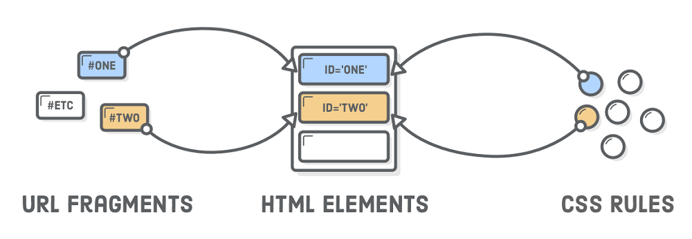

Tags Html
O que é a tag "HTML"
As tags são usadas para informar ao navegador a estrutura do site. Ou seja: quando se escreve um código em HTML, as tags serão interpretadas pelo navegador, produzindo assim a estrutura e o conteúdo visual da página.

O que é a tag "Body"
A tag body contém o corpo de um documento HTML, que é exibido pelo navegador em sua janela, ou seja, todo o conteúdo visível do site. É necessário que o body tenha ao menos um elemento "filho", ou seja, uma ou mais tags HTML dentro dele.
O que é a tag "P"
A tag "p" é utilizada para demarcar um parágrafo. O elemento HTML "p" (ou Elemento HTML Parágrafo) representa um parágrafo do texto.
O que é a tag "pre"
HTML texto preformatado "pre" é a tag utilizada para representar texto pré-formatado. Um texto dentro desse elemento é tipicamente exibido em uma fonte não proporcional da mesma maneira em que o texto original foi disposto no arquivo.
O que é a tag "h1...h6"
São recursos de programação HTML utilizados para destacar títulos e subtítulos de uma página. Elas são utilizadas na hierarquização e estrutura de uma página.
O que é a tag "span"
Para que serve a tag span? Na prática, a tag "span" serve para que você seja capaz de representar elementos visuais destacados de um todo e não representa nada por natureza
O que é a ta "div"
A tag "div" cria um bloco genérico para agrupar conteúdos. Ela é equivalente, no grupo de tags de bloco, ao que a tag "span" representa no grupo de tags inline/conteúdo. A função da tag "div" é separar os conteúdos do código HTML em divisões de espaço/conjunto, sem qualquer peso semântico.
Seletores CSS
O que é seletor por tag
É o seletor mais abrangente da CSS, ele casa com todos os elementos encontrados. Os estilos abaixo irão refletir em todos o elementos p e h1 da página
O que é seletor por classe
O seletor de classe deve ser usado quando muitos elementos compartilham do estilo definido na regra. Por exemplo, se queremos alterar todos os parágrafos em uma página utilizamos o seletor de classe.
O que é seletor por id
Este seletor é utilizado, quando desejamos identificar um elemento específico no nosso documento, para sua representação no CSS atribuímos o “#” (cerquilha).